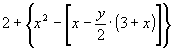
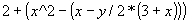

Regras para resolução de expressões:
1 - Potenciações e Raízes;
2 - Multiplicações e Divisões;
3 - Somas e Subtrações;
A ordem do cálculo poderá ser alterada com o uso dos parênteses, colchetes e chaves.
A observação acima é adaptada para a programação da seguinte maneira: usa-se somente parênteses, sendo que, as operações serão feitas do conteúdo do parêntese mais interno para o mais externo.
Exemplos:

será codificada como:
